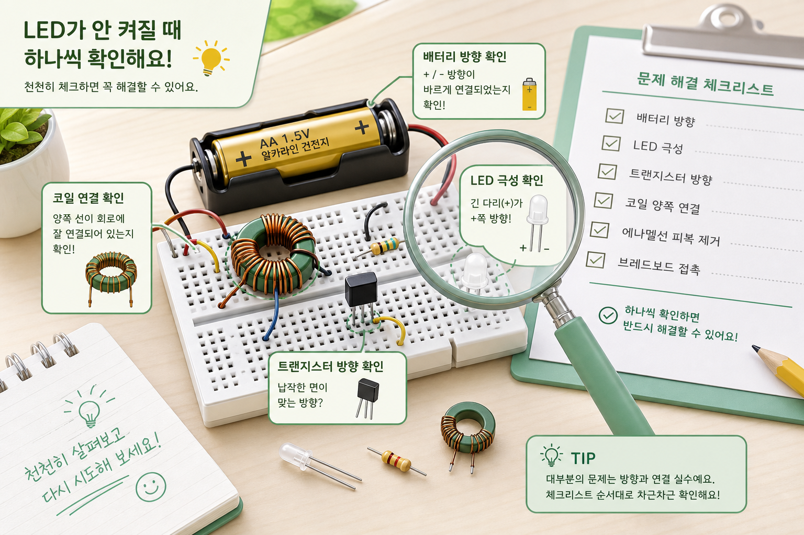
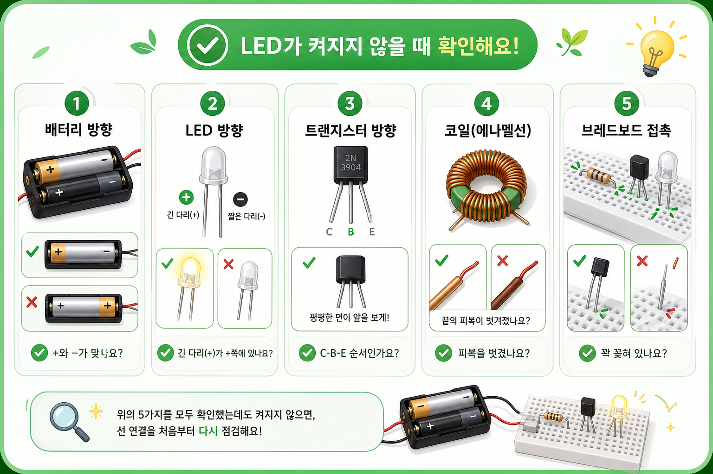

문제 해결
LED가 안 켜져도 바로 고장은 아닙니다
초보자 실습에서는 부품 방향, 코일 연결, 접촉 불량 때문에 LED가 안 켜지는 경우가 많습니다. 아래 순서대로 하나씩 확인하세요.

우선순위 점검
- 건전지 극성이 반대로 연결되지 않았는지 확인합니다.
- LED의 긴 다리와 짧은 다리 방향을 확인합니다.
- 트랜지스터의 평평한 면과 핀 배열을 부품 데이터 기준으로 확인합니다.
- 코일 두 권선의 연결 방향이 바뀌지 않았는지 확인합니다.
- 에나멜선 끝의 피복이 충분히 벗겨졌는지 확인합니다.
- 브레드보드 구멍에 부품 다리가 제대로 꽂혀 있는지 확인합니다.
증상별 원인

| 전혀 안 켜짐 | LED 극성, 배터리 극성, 코일 방향, 트랜지스터 방향을 먼저 확인합니다. |
|---|---|
| 잠깐 켜졌다 꺼짐 | 접촉 불량 또는 배터리 전압 부족일 수 있습니다. |
| 부품이 뜨거움 | 합선 가능성이 있으므로 즉시 배터리를 분리합니다. |
| 한 조만 실패 | 부품 불량보다 조립 방향 차이를 먼저 비교합니다. |